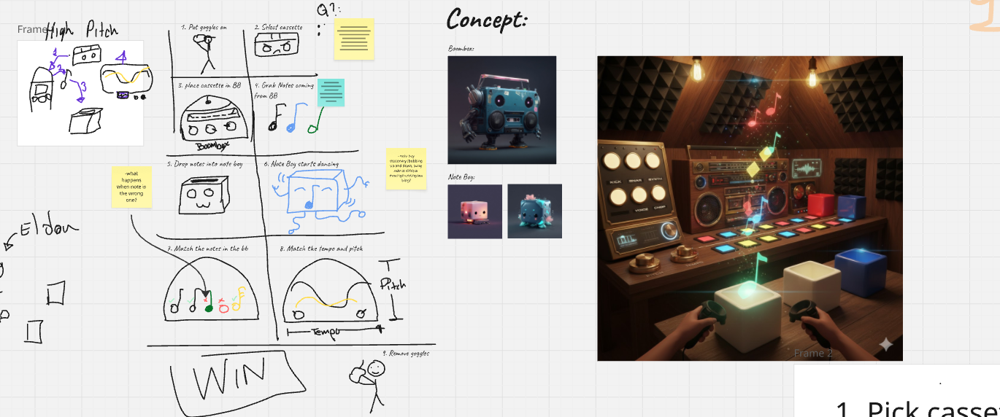
After that, I went into ShapesXR and try to animate why was in our design meeting and turn it into a 3D space. This helps everyone visualize and get on the same page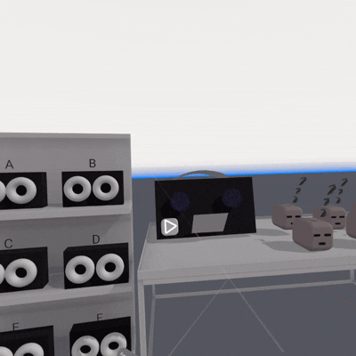
There were a lot interactables in our project. First and most common one is buttons. So I needed to make sure buttons are working. To also help myself and the user visualize a button was successfully pressed (besides button going down), we added a testing light above it (for now, a cylinder with color change to simulate a light)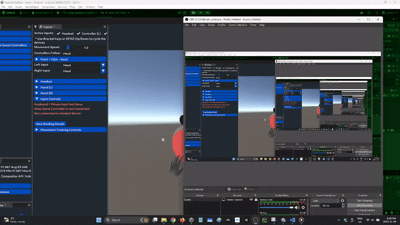
However, from the previous one, you see the hand was going through the button. I needed to make sure the proximity field and surface were setup correctly - including right distance from where I want the poke to start and end.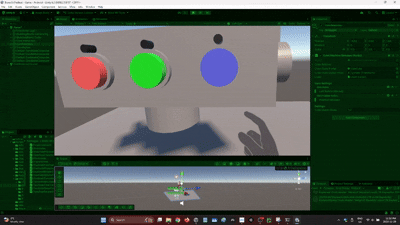
Now it was time to apply it on to the real model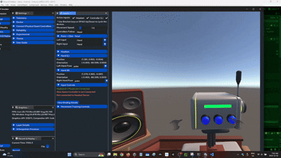
With the button poking setup, I used the same logic on every other buttons. If the buttons were simliar just different color/logos, I would create a prefab. First were the cassette buttons which can play and pause the cassette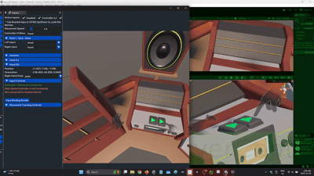
Then there was the sequencer buttons. These can play and pause the cubeats from playing music.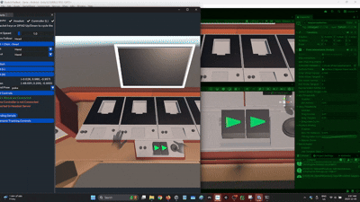
Next I wanted to be able to grab and rotate a lever. This will spawn a Cubeat from our Cubeat Maker. I needed to make sure the lever can be grabbed. Setting up the grab interaction was straight forward, I just had to make sure the Rotate transformer was set up properly including the min/max angle, and the pivot point. This was important because the user can only turn the lever towards himself at a 45 degrees.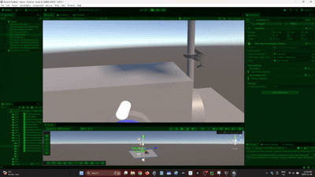
However, as you see that I was ableo to rotate the lever by pinching or grabbing. In addition, my hand was not on the lever the whole time. Luckily there is hand pose where I can create a hand shape near the lever and take a "picture". That pose will be my grab pose. So now I have to completey close my hand to grab the lever - at least that's what it will look like in VR!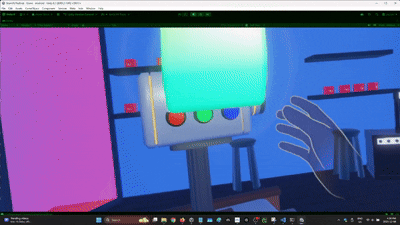
Now that I have grabbing already figured out. I can start figuring how to grab Cubeats, notes and Cassettes. The idea for all of them are the same - Grab and snap them to a surface. I had to make sure a SnapInteractable was setup properly AND make sure the correct objects can snap to the correct interactables. First was grabbing the cubeats and snapping it on to the sequencer. It was important to have an indication for the user where to place the cubeats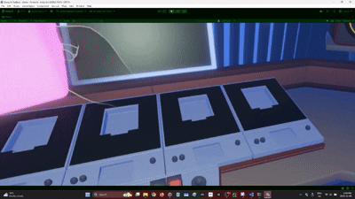
The indication was working, but I didn't like how it looked. I wanted a silhouette of the cube. So I asked our amazing artist to create a silhouette the cubeats as an indicator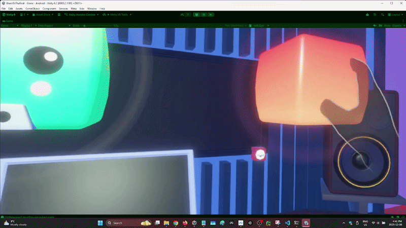
Similarily, the when I place the cassette into the cassette box. Setup was the same with Grab interaction and Snap interactions. A silouhette was also added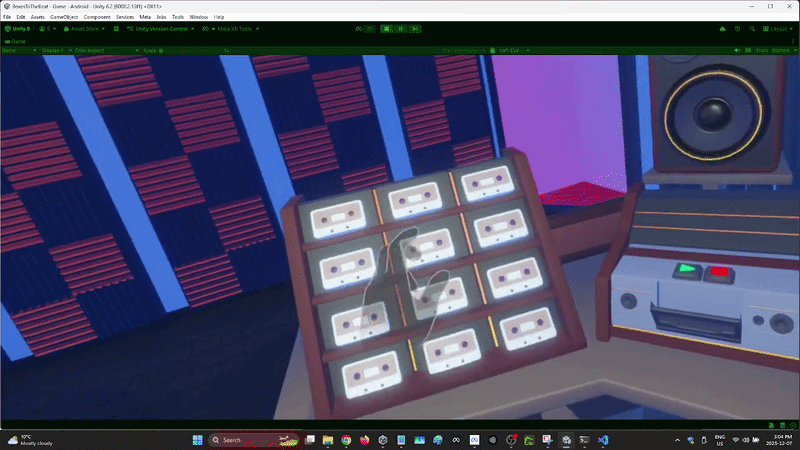
I also added snap interaction from the notes on to the cubeats.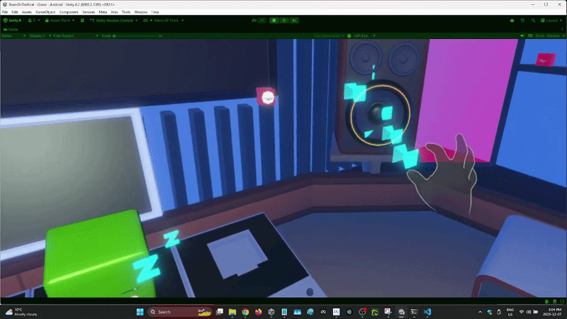
So grabbing was working...but the problem was I could still grab the cassette while it was in the cassette box and closed. I was able to add a check, when the cassette box is playing something - meaning it is closed, I disable the collider on the cassette tape - but more specifically the cassette tape that is in the cassette box. If the cassette box is not playing anything, then it is opened and cassette tape collider is reenabled! At the end, all the objects were interactable, pokable and grabbable! With the help of my other team members, we created a fun and engaging VR Rhythm puzzle!
At the end, all the objects were interactable, pokable and grabbable! With the help of my other team members, we created a fun and engaging VR Rhythm puzzle!